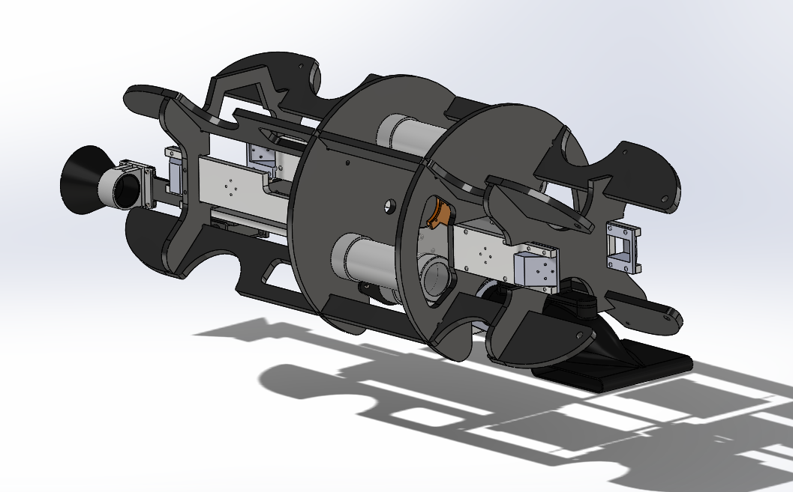
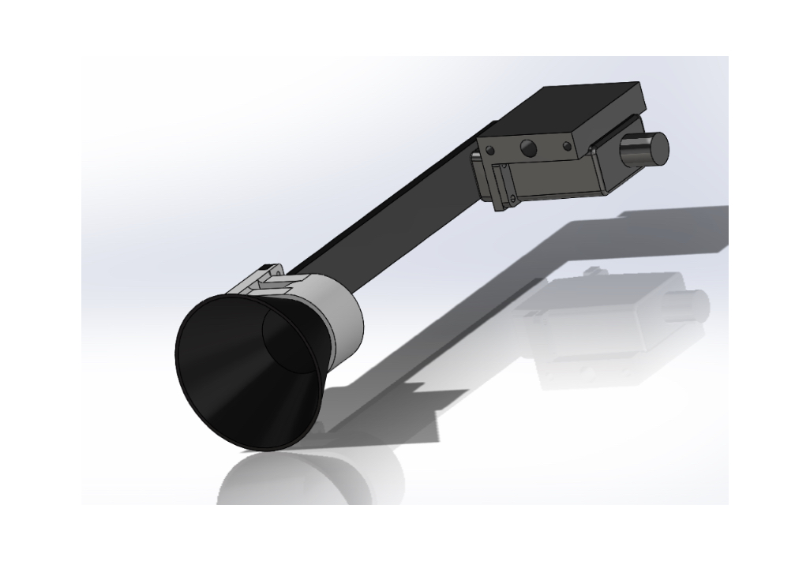
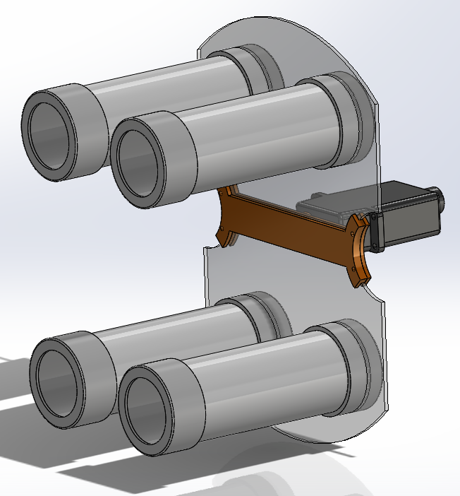
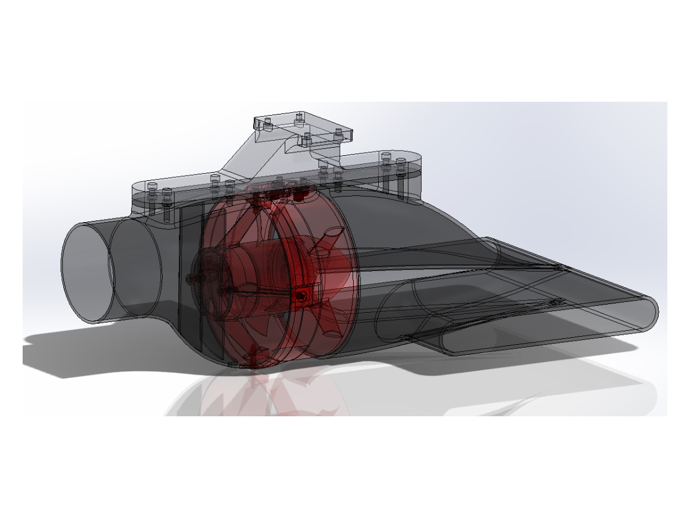
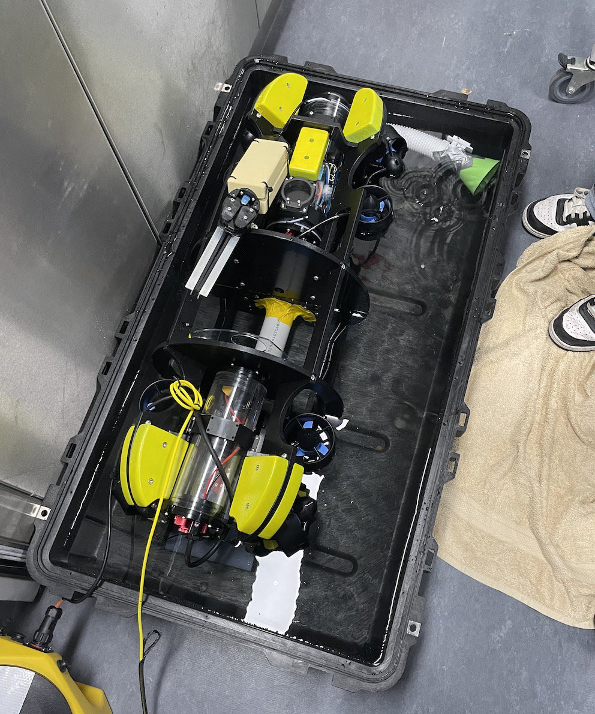

Mechanical Design / CAD / 3D Printing
Subzero UROV Flora Fauna Collection Attachment
A sample collection attachment for a modified BlueROV2, designed to help an underwater robot gather flora and fauna samples with a suction intake and rotating storage system.

Snapshot
Designing a compact collection mechanism for underwater sampling.
2024
Designer
Suction concept, rotating canister concept, CAD design, 3D printing
UW Australia engineering design project for a Subzero / BlueROV2 platform
Overview
The attachment needed to collect samples without disrupting the robot.
The project explored how an underwater remotely operated vehicle could collect biological samples while staying compatible with the existing robot body. From my side, the most important design challenge was making the collection action precise enough to target small samples, while keeping the mechanism simple enough to build, test, and iterate.
I focused on the suction intake and the rotating storage concept. My work moved between brainstorming, CAD modeling, print-ready part refinement, and hands-on 3D printing so the ideas could become physical prototype parts.
Design process
I worked through the mechanism as a sequence of testable parts.
Frame the collection action
I brainstormed how suction could guide small flora and fauna samples into the system while staying readable from the robot operator's point of view.
Design the rotating storage
I explored how a rotation mechanism could index collected samples into separate canisters, reducing the need for a large or overly complex storage structure.
CAD, print, and refine
I translated the suction and rotation ideas into CAD parts, prepared them for 3D printing, and adjusted details around fit, clearance, and assembly.
Prototype details
The visual system shows the path from CAD to physical testing.




Final outcome
A working prototype direction for modular underwater collection.
The final direction combined a suction-based intake with a rotating canister storage approach, giving the robot a clearer way to capture and separate samples. My contribution helped turn early collection ideas into CAD-defined, 3D-printed components that could be assembled and evaluated with the larger UROV system.
Reflection
This project taught me to design around motion, space, and uncertainty.
Working on the suction and rotation mechanisms made me think beyond static form. Each part had to fit inside a larger robot, survive assembly constraints, and still communicate a clear purpose during testing.
It also strengthened my CAD-to-fabrication workflow. I learned to make mechanical ideas easier to test by breaking them into printable parts, checking clearances, and treating each prototype as a conversation between design intent and physical behavior.